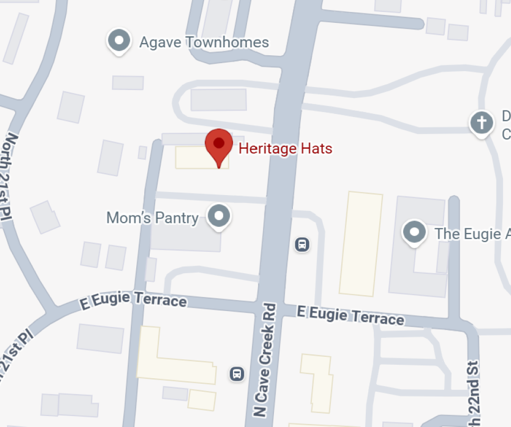

Hats That Keep Arizona Covered
The largest hat shop in Arizona, Heritage Hats has been a staple of Phoenix's weastern flare since the 1980's. Providing both quality custom made and brand name hats, we strive to help you find a hat that will express your unique personality and style.
Popular Styles
View All
Resitol Revenger
Western Felt Hat
$169.95
About Us
The name Heritage Hats was born because I wanted a name that would express my passion to learn and carry on a skill and tradition about the way of life and the traditional culture of the southwest. I moved to Phoenix from Rockford, Illinois in 1981 and became infatuated with the western lifestyle, particularly the life of the cowboy. I befriended two older gentlemen who taught me the techniques and skills of cleaning and blocking western hats for cowboys.
As I continued to perfect my techniques and skills, I started selling western hats from my pickup truck on the weekends at rodeos and I opened my first retail store in 1983. Today, Heritage Hats is the largest hat store in Arizona with a wide variety of hats. We continue to make hats that are not only stylish but provide protection from the hot Arizona sun. We carry brands that offer a UPF of 50+ and have a 5" brim for added protection, reducing the risks of skin cancer.
-Rich Glisson (Owner)
Frequently Asked Questions
What kinds of hats do you sell?
We have a large selection of westerns, fedoras, Panama's, Australians and a variety of caps and other hats including the Kangol, pork pie, derby, and top hats. We also carry a large variety of flat style caps. We provide a large selection of hat bands and other accessories for you to choose from for ultimate hat customization.
Does Heritage Hats offer restoration services?
Yes we do! We are fully equipped to offer a complete range of hat cleaning/blocking and restoration services that can restore your older hat or make style changes to a hat that you purchase at Heritage Hats. We can clean and block most felt hats including western, fedora and dress hats. Listed below are the services we provide, for more information email us at HeritageHats@gmail.com or call 602-867-3323.
- Cleaning and Blocking - $60.00
- Re-shaping Crown - $25.00
- Re-shaping Brim - $20.00
- Sweatband Replacement - $45.00
Where and when can I visit Herigate Hats?
We are located at 13602 N. Cave Creek Road which is south of Greenway and North of Thunderbird Road. Just look for the big HATS sign on the west side of the street. We look forward to helping you select the right hat for your fashion or lifestyle needs.
Heritage Hats 13602 N Cave Creek Rd, Phoenix, Arizona Phone: (602) 867-3323 Hours: Monday to Saturday: 10am-5pm
How can I take care of my new hat?
We are so glad you asked! Here are some tips for both felt and straw hats:
Felt Hats:
- Use a gum eraser on stains too deep to remove with a brush or towel. If sponging doesn't remove all the marks, try sanding with 100-grit paper. Move the sandpaper, very gently, in counterclockwise direction. Never press into the hat, and never press the hat into the paper.
- Do not take your hat on and off your head by handling the crown. Instead, use the front and back of the brim next to the crown bend.
- Do not set your hat down on its brim, which causes it to flatten and lose its shape.
Straw Hats:
- Wipe with a soft cloth dipped in warm suds made with a synthetic detergent or soap.
- Rinse with another cloth barely dampened with plain water and then allow to air dry.
- Do not get a straw hat too wet or you could damage it.
Does Heritage Hats do events/convention services?
Heritage Hats is the largest hat store in Arizona and can handle your hat fitting needs for your local convention or event in the Phoenix-Scottsdale-Tucson-Sedona Arizona areas. We have the largest hat selection in the state so we can meet your needs; whether you are looking for the traditional western hat to meet the wild west theme or hats and caps that will meet the different preferences of a golfer. If you are hosting a cancer related event, we can offer hats that have UPF 50+ and 5 " brims to promote skin cancer awareness which is so appropriate for the "Valley of the Sun". For larger groups, we will provide a professional and knowledgeable staff to be on site for the event. For more information email us at HeritageHats@gmail.com or call 602-867-3323.